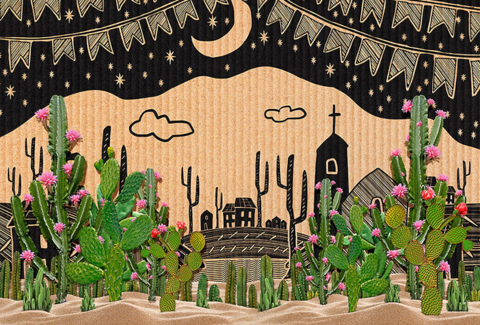

Cordel são folhetos contendo poemas populares, expostos para venda pendurados em cordas ou cordéis, o que deu origem ao nome.
Os poemas de cordel são escritos em forma de rima e alguns são ilustrados com xilogravuras. As histórias presentes no cordel fazem parte da cultura popular e, em geral, mesclam o humor e ironia com uma abordagem crítica de questões presentes no cotidiano e na cultura popular.
Os autores, ou cordelistas, recitam esses versos de forma melodiosa e cadenciada, acompanhados de viola, como também fazem leituras ou declamações muito empolgadas e animadas para conquistar os possíveis compradores. É comum que o cordelista seja o autor, o ilustrador, o produtor, o intérprete e o vendedor da obra.
Cordel também proporciona a divulgação da arte, das tradições populares e dos artistas locais. Assume uma grande relevância na manutenção das identidades culturais e das tradições literárias regionais.

Literatura de cordel
A literatura de cordel tem início no período colonial, uma tradição trazida pelos colonizadores portugueses. Na Europa, os cordéis eram populares também em países como a França, a Espanha e a Inglaterra.
No Brasil, a literatura de cordel tornou-se popular no Nordeste, principalmente nos estados de Pernambuco, Paraíba, Rio Grande do Norte e Ceará. Costumava ser vendida em mercados e feiras pelos próprios autores.
O poema abaixo, escrito pelo poeta e cordelista Zé da Luz revela a forte presença da cultura popular tanto no tema de um amor eterno, como no uso da linguagem coloquial marcada pelo regionalismo.
Ai! Se sêsse!…
Se um dia nós se gostasse;
Se um dia nós se queresse;
Se nós dois se impariásse,
Se juntinho nós dois vivesse!
Se juntinho nós dois morasse
Se juntinho nós dois drumisse;
Se juntinho nós dois morresse!
Se pro céu nós assubisse?
Mas porém, se acontecesse
qui São Pedro não abrisse
as portas do céu e fosse,
te dizê quarqué toulíce?
E se eu me arriminasse
e tu cum eu insistisse,
prá qui eu me arresolvesse
e a minha faca puxasse,
e o buxo do céu furasse?…
Tarvez qui nós dois ficasse
tarvez qui nós dois caísse
e o céu furado arriasse
e as virge tôdas fugisse!!!